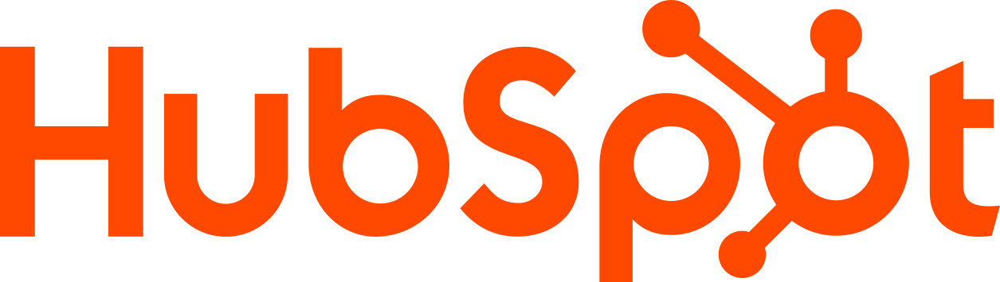
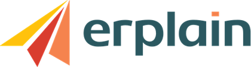
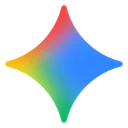
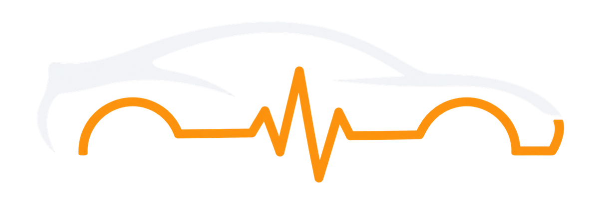
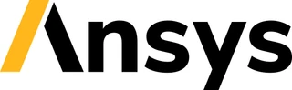
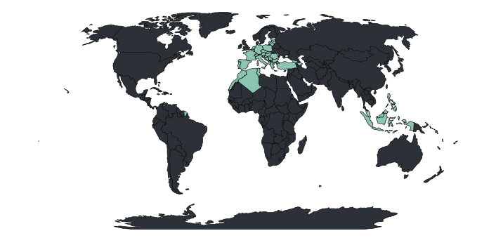

Stratégie produit
Discovery, roadmap, priorisation et delivery transverse. Transformer les besoins en spécifications claires et en résultats mesurables.
- Discovery
- RICE / MoSCoW
- Gestion de projet
PRODUCT OWNER · PARIS
6 ans en ingénierie qualité. Ingénierie d’affaires B2B, de la prospection à la vente complexe.
Mon écosystème, en mouvementShopify · n8n · HubSpot · GitHub · Mirakl · Erplain · Pennylane · Gemini · Stripe · Cloudflare · Google Ads · Meta Ads · Semrush · Trello · Microsoft Office · Python · MySQL · Brevo · JavaScript · Apify · Power BI · Amazon · eBay · WordPress · Vercel · Render · WooCommerce · TypeScript · PostgreSQL
Product Owner basé à Paris. Six ans en qualité et management des processus, de l’automobile au QHSE et à la qualité logicielle, complètent mon parcours en ingénierie d’affaires B2B. Prospection B2B, vente complexe et négociation nourrissent ma compréhension des besoins ; analyse des risques et amélioration continue guident la réalisation de solutions utiles et fiables.
Trois produits pour découvrir ma façon de travailler.
CE QUE JE PEUX APPORTER
Discovery, roadmap, priorisation et delivery transverse. Transformer les besoins en spécifications claires et en résultats mesurables.
Prospection B2B, qualification des besoins, vente complexe et négociation. Construire des propositions de valeur, coordonner les décideurs et développer des relations clients durables.

HubSpotPlateformes Shopify Plus, parcours grossistes et écosystèmes marketplace. Une expérience connectée du catalogue à l’expédition.
API, webhooks et workflows n8n reliant ERP, CRM, logistique et facturation. Moins de saisie répétitive, des opérations plus fiables.
Assistants de prospection, bases de connaissances du support client et outils web métier. Une IA ancrée dans les usages concrets.
Analyse des risques, AMDEC, recherche des causes racines et actions correctives. 8D, PDCA et RETEX soutiennent l’amélioration continue, avec la pratique des référentiels ISO 9001 et IATF 16949.
OUTILS / MÉTHODES / TECHNOLOGIES
La vision métier. Les outils pour la concrétiser.
Six domaines complémentaires, du cadrage produit à la qualité industrielle. Voici les méthodes et la stack technique que je mobilise dans mes projets et mon parcours.
Transformer un besoin utilisateur en une livraison que l’équipe peut réaliser et mesurer.
Compétences clés
Relier besoins clients, proposition de valeur et exécution commerciale.
Compétences clés
Connecter la boutique aux systèmes qui font fonctionner l’activité.
Compétences clés

ErplainConstruire l’interface, connecter les API et structurer les données qui l’alimentent.
Compétences clés
Inscrire l’assistance conversationnelle et l’automatisation dans les usages réels.
Compétences clés

Gemini APIChercher les causes racines et rendre l’amélioration traçable, de l’industrie aux produits numériques.
Compétences clés
Référentiels
OHSAS 18001 : ancien référentiel de santé et sécurité au travail. BSI ↗
DU BESOIN À L’USAGE
Comprendre avant de construire. Mesurer avant de conclure.
L’ingénierie qualité m’a appris à chercher la cause racine, documenter les décisions et valider sur des faits. J’applique cette rigueur au produit.
Comprendre
Interroger les utilisateurs, cartographier le travail réel et identifier les contraintes opérationnelles avant la première user story.
Entretiens · Cartographie des flux
Prioriser
Choisir ce qui mérite une place dans la roadmap selon la valeur métier et l’impact utilisateur. RICE et MoSCoW rendent ces choix explicites.
RICE / MoSCoW · Backlog priorisé
Livrer
Aligner les parties prenantes, rédiger les spécifications et critères d’acceptation, puis animer les rituels agiles qui soutiennent le delivery.
User stories · Critères d’acceptation
Mesurer
Définir les indicateurs de succès dès le cadrage, suivre l’adoption et les usages, puis faire évoluer le produit par itérations.
KPIs · Adoption · Itération
PRODUIT / COMMERCE / INGÉNIERIE
La vision produit. La profondeur technique. L’impact terrain.
SHOPIFY PLUS / B2B / AUTOMATISATION
Fédération Française de l’Apéritif
Chef de projet e-commerce B2B / Product Manager chez FFA, en alternance KEDGE (2025–2026). Refonte de la boutique et connexion des commandes, stocks, expéditions et factures.
FFA commercialise des produits d’apéritif français et des coffrets, auprès des particuliers et des professionnels. Alternance KEDGE, 2025–2026.
Une boutique WordPress vieillissante et des opérations fragmentées : commandes recopiées entre systèmes, étiquettes créées manuellement et factures saisies une à une.
Discovery produit, ownership de la roadmap et priorisation ; alignement des équipes techniques, des opérations et des partenaires marketplace, de la spécification à la mise en production.
Une refonte Shopify Plus B2B/B2C avec synchronisation Erplain, intégrations Mirakl et workflow n8n reliant commandes, expédition et facturation. Redirections et mappings canoniques préservés pendant la migration.
Périmètre livré, 2025–2026 : WordPress remplacé par Shopify Plus ; 367 références, cinq canaux marketplace et un flux connecté commande/expédition/facture.
Résultats déclarés : −40 % de charge administrative et aucune saisie manuelle dans le flux principal. Période de référence, situation initiale et méthode de mesure restent à documenter.
Comptes entreprises, tarifs par client, commandes provisoires et paiements différés. Mapping des stocks en temps réel sur 367 références, avec commandes récurrentes et coffrets saisonniers.
AstoreShop (Accor), Nature & Découvertes, Veepee, Ankorstore et Kviste : onboarding catalogue, taxonomie produit, mapping des variantes, règles tarifaires et contrôles qualité propres à chaque canal.
Un chatbot IA adapté d’une application open source s’appuie sur les questions clients et oriente les conversations par intention et criticité. Kwanko complète l’acquisition avec tracking d’affiliation, commissions et activation des éditeurs.
Un sélecteur de points relais Google Maps / Places relie le choix au checkout aux étiquettes Colissimo. Le tagging analytics côté serveur, le mapping des champs API et la validation des données fiabilisent les flux entre systèmes.
Certaines données sensibles sont masquées sur les captures.
B2B / SAAS / TYPESCRIPT
Une plateforme de prospection B2B pilotable par conversation avec son copilote Gemini : rechercher des comptes, préparer la prospection et coordonner les agents spécialisés.
Décris ton objectif au copilote en langage naturel. Il s’appuie sur le contexte de la page pour rechercher des prospects, qualifier les fiches, préparer les campagnes et coordonner les agents spécialisés. Les modifications de données proposées sont présentées avant application. L’intelligence conversationnelle utilise l’API Google Gemini.
Données dispersées, qualification répétitive et séquences déconnectées rendent la prospection B2B lente et irrégulière.
Pilotage produit et réalisation : cadrer les besoins de prospection multi-clients, prioriser le parcours recherche → prise de contact et définir les critères d’acceptation des sources, de la revue des contacts et de l’envoi explicite.
Découverte d'entreprises par sources publiques, enrichissement traçable, vérification des contacts, pipeline Kanban et séquences de prospection. Next.js, TypeScript et PostgreSQL, avec application mobile Expo et extension Chrome.
Visiter LeadHuntUne application de prospection B2B en ligne, pilotable par conversation, avec agents spécialisés et extension de capture Chrome.
Le premier workflow présenté sur mon portfolio reliait sources publiques, Apollo et recherche LinkedIn à n8n, aux séquences Brevo et à HubSpot. Le SaaS actuel étend ce parcours à la prospection par organisation, à la vérification des contacts et aux outils outbound.
Hunter, Apollo et Kaspr sont des connecteurs configurables avec le compte de l’organisation. Les profils LinkedIn sont capturés via l’extension LeadHunt.
La disponibilité dépend de la configuration de l’organisation et de ses comptes fournisseurs.
Certaines données sensibles sont masquées sur les captures.
AUTOMOTIVE / WEB & MOBILE

CardiagPilotage produit d’un parcours d’inspection accessible : aider acheteurs, propriétaires et garagistes à transformer leurs observations en contrôles, en bilan clair et en prochaine action.
Version publique ·
Avant un achat ou un entretien, un non-spécialiste doit savoir quoi contrôler, comment conserver les faits et quand consulter un professionnel. Des observations, codes défaut et documents dispersés compliquent cette décision.
La restauration de moteurs personnels, la sécurité en rallye et le simracing m’ont confronté à une difficulté concrète : reconnaître un symptôme ne dit pas à un non-spécialiste quoi vérifier ensuite. Cardiag transforme cet intérêt terrain en parcours d’inspection guidé et documenté.
Product Owner : cadrer les parcours acheteur, propriétaire et atelier ; définir le backlog d’inspection, prioriser un premier parcours local utilisable et traduire le périmètre en user stories et critères d’acceptation observables. Les choix techniques servent la continuité sur le terrain et la lisibilité du dossier véhicule.
La version web responsive est disponible sur ordinateur et mobile. Une base Expo commune cible Android et iOS ; la distribution native est distincte de l’accès depuis un navigateur mobile. Inspections locales, synchronisation d’un compte vérifié et rapports PDF relient les observations terrain au dossier véhicule.
Version publique depuis septembre 2026, avec environ dix utilisateurs (donnée déclarée). La version web propose un mode rapide de 12 points, 33 contrôles complets et un catalogue de 201 marques.
Sept familles structurent documents, moteur, châssis, carrosserie, équipements, essai et synthèse finale. Le parcours complet de 33 contrôles rend cette couverture explicite ; la sélection de 12 points réduit l’effort d’un premier passage. Le mode rapide n’est pas présenté comme équivalent à l’inspection complète.
Préserver la saisie à côté du véhicule lorsque la connexion varie. Les données d’inspection sont conservées sur l’appareil ; la synchronisation d’un compte vérifié permet ensuite de retrouver les dossiers pris en charge sur plusieurs appareils. Les photos restent locales. L’assistant Gemini nécessite une connexion.
Le catalogue de 201 marques relie modèle, génération et motorisation aux défauts récurrents documentés. Ce contexte aide à prioriser les vérifications suivantes ; il ne prouve pas qu’un défaut connu est présent sur le véhicule inspecté.
Choisir un mode rapide de 12 points ou une inspection complète de 33 contrôles répartis en sept familles. Des étapes compréhensibles guident les non-spécialistes. La progression mesure les contrôles renseignés, pas la fiabilité du véhicule.
Le référentiel étendu couvre 201 marques et 2 697 entrées de modèles, avec générations et motorisations. Les problèmes récurrents documentés précisent les symptômes à rechercher, les pièces concernées, les kilométrages d’apparition habituels et les coûts indicatifs, puis orientent les vérifications adaptées au véhicule sélectionné.
L’agent conversationnel, alimenté par l’API Google Gemini, pose des questions ciblées et croise le contexte du véhicule avec les symptômes, observations et codes défaut. Il aide à remonter aux causes racines probables et à préparer les contrôles, avec des estimations indicatives du coût et du temps de réparation, à affiner par les mesures et l’inspection en atelier.
Générer une fiche de contrôle du véhicule au format PDF : identification, vérifications réalisées, observations renseignées, photos et points de vigilance. Elle sert de support pratique pour inspecter le véhicule avant achat, puis peut être conservée avec son dossier afin de garder la traçabilité de son état et des contrôles successifs.
Les rapports et les pièces passent actuellement par des liens externes et des enregistrements manuels. L’accès aux API partenaires et l’activation de Stripe restent à finaliser.
Diagnostic conversationnel · API Gemini
Certaines données sensibles sont masquées sur les captures.
MOBILE / PROTOTYPE D’ASSISTANCE
Un prototype d'entraide de premiers secours explorant triage, consignes hors ligne, consentement et itinéraire du secouriste.
Prototype de phase 1 avec mode démo et tutoriels embarqués. Ce concept d'assistance ne remplace pas les services d'urgence. Déploiement et validation terrain restent des étapes distinctes.
Le consentement précède l’utilisation de la position. Les tutoriels sont embarqués hors ligne ; l’itinéraire ouvre Waze, Google Maps ou Apple Plans. SMS et notifications critiques restent à développer.
NETWORKING / PRÉ-LANCEMENT
Profils professionnels, annuaire et échange de portfolios par QR code pour le networking.
Un carnet professionnel avec profils publiés, notes privées et export des données. Le lancement se prépare autour de l’accessibilité et des droits sur les données ; les événements restent dans la roadmap V2.
Partage QR et vCard, profils publics sur consentement, notes privées et export/suppression JSON. L’assistant extrait le texte des CV PDF/DOCX en données structurées. La gestion d’événements reste prévue en V2.
Profils, contacts et notes privées
PRODUCTIVITÉ / ADAPTATION OPEN SOURCE
Un espace privé de recherche professionnelle associant suivi des offres, brouillons de CV et pipeline de candidatures fondé sur des preuves.
Adaptation du projet open source career-ops avec suivi des pages carrière, studio de CV et accès réservé au propriétaire. Le workflow prépare les décisions sans envoyer automatiquement de candidature.
Projet open source originalSuit les pages carrière et rapproche les mots-clés des offres. Le studio CV conserve des brouillons privés, aperçus et exports PDF/HTML. La complétude repose sur une checklist explicite ; candidatures et messages restent manuels.
IA / AUTOMATISATION LOCALE
Un copilote Windows personnel reliant une interface Telegram privée aux outils locaux et à une inférence configurable.
Texte, photos et voix transcrite sur CPU pilotent les outils locaux. Webhooks nommés, corrections bornées et journal d’audit accompagnent le parcours ; une API de modèle externe est optionnelle.
Une interface privée pour les workflows locaux
B2B / PROPOSITION HACKATHON

Ansys — Simulation augmentée par l’IAUne proposition B2B pour les cas d’usage Dassault Aviation : accélérer les itérations de simulation tout en conservant les solveurs physiques certifiés, la validation experte et la maîtrise des données sur site.
Hackathon Ansys · KEDGE Business School · 2026 · 1re place, Innovation.
Hackathon Ansys à KEDGE Business School · 2026 · 1re place, catégorie Innovation. Proposition B2B de simulation assistée par IA.
AeroSignal AI : intégration électromagnétique des antennes. AeroShape AI : préfiltrage des géométries aérodynamiques. Aero Twin Ops : maintenance et modèles d’ordre réduit. Sovereign Secure AI : déploiement sur site et stratégie commerciale par persona.
Les cas Rafale et Falcon cadrent la proposition. Les prédictions incertaines repassent par les solveurs rigoureux et les experts ; il s’agit d’un concept commercial de hackathon.
Un concept commercial avec validation experte
MARKETPLACE / WEB & ANDROID
Une marketplace web/Android de récupération d’objets à échéance, avec lots, dons, recherche de proximité et messagerie en temps réel.
Annonces à échéance, lots et dons ; recherche de proximité et chat Socket.IO. Positions publiques arrondies, adresses privées et photos envoyées via URL S3 signée. Le paiement reste une piste V2.
Une seconde vie pour les objets, à proximité
COMMERCE INDÉPENDANT / OPÉRATIONS
DTC / ENTREPRENEURIAT
Création de marques e-commerce et pilotage de toute l’activité : identité, boutiques, négociation fournisseurs, acquisition et ventes internationales.
2019 — aujourd’hui
Shopify · WordPress / WooCommerce
Bijoux pour femmes et accessoires pour animaux : concevoir l’identité et l’emballage, créer une boutique Shopify ou WooCommerce et ses réseaux sociaux, négocier stocks et transport avec des fournisseurs en Chine et en Turquie, puis combiner affiliation et campagnes payantes. Amazon/eBay et le paiement à la livraison complètent la distribution.
Création de marques dans les bijoux et accessoires pour femmes et les accessoires pour animaux. Plus de 20 boutiques e-commerce créées sur Shopify et WordPress / WooCommerce, avec des canaux de vente sur Amazon et eBay.
Conception de l’identité de marque, du logo à l’emballage des produits, puis création de l’environnement de chaque marque sur Instagram, Facebook et TikTok.
Collaboration avec des fournisseurs en Chine et en Turquie. Négociation des achats de stock, des frais et délais de transport ainsi que des conditions de stockage.
Mise en place de campagnes d’affiliation avec des influenceurs et d’anciens clients pour générer du trafic organique et soutenir les ventes à l’international.
Création et pilotage de campagnes Google Ads, Meta Ads et TikTok Ads, avec suivi des budgets publicitaires et des marges.
Ventes dans le monde entier et pratique du cash on delivery dans des pays d’Afrique et du Moyen-Orient : le client paie sa commande au moment de la livraison.
Responsabilité P&L complète, avec une équipe à distance aux Philippines organisée autour de workflows asynchrones et de tableaux de bord KPI.
CAS TRANSVERSE · DEPUIS 2019
Ce cas synthétise plusieurs marques et marchés ; le chiffre de 20+ désigne les boutiques créées, pas un volume de ventes.
EXPÉRIENCES / FORMATIONS / FORMATION CONTINUE
Six ans en qualité et management des processus, entre automobile, QHSE, assurance qualité logicielle et projets qualité. Un socle que je mobilise aujourd’hui en développement d’affaires et en pilotage produit.
Expériences professionnelles
PRODUIT / COMMERCE
Fédération Française de l’Apéritif
Relier les priorités produit, les plateformes e-commerce et les opérations B2B.
2025 — 2026
Chef de projet e-commerce B2B / Product Manager · Alternance
Discovery et pilotage du backlog ; coordination de la refonte Shopify Plus, de l’ERP, des marketplaces et de l’automatisation logistique. La gestion de projet relie priorités, critères d’acceptation et recette ; les boucles PDCA transforment les retours opérationnels en améliorations.
Voir le projet FFAQUALITÉ / PROCESSUS
Piloter les projets qualité par la gestion des risques, la résolution de problèmes et l’amélioration continue.
2023 — 2025
Chef de projet qualité · Amélioration des processus
Pilotage de projets qualité : cadrage des objectifs, cartographie des processus et coordination des plans d’amélioration. L’AMDEC structure la priorisation des risques ; le PDCA, la recherche des causes racines et le Lean Six Sigma guident les actions correctives, la réduction des gaspillages et leur suivi dans une logique ISO 9001.
LOGICIEL / QUALITÉ
Relier le support client et le développement par la qualité logicielle.
2022 — 2023
QA & support produit
Assurance qualité logicielle à l’interface entre support et développement : analyse des tickets, reproduction des anomalies, plans de tests fonctionnels et validation des releases. La recherche des causes racines et le PDCA structurent les corrections, les contre-tests et le retour d’expérience dans le cycle de livraison.
INGÉNIERIE / QHSE
Appliquer l’analyse des risques et les pratiques QHSE aux activités de dispositifs médicaux.
2020 — 2022
Ingénieur QHSE · Dispositifs médicaux
Cartographie des risques QHSE, AMDEC, audits des sous-traitants et suivi de la sécurité chimique dans les activités de dispositifs médicaux. Les plans d’action PDCA relient les constats à la prévention et à l’amélioration interservices, avec les référentiels ISO 9001 pour la qualité, ISO 14001 pour l’environnement et OHSAS 18001, référentiel historique de santé-sécurité.
INGÉNIERIE / AUTOMOBILE
Associer qualité production, méthodes préventives et traçabilité documentaire.
2018 — 2019
Ingénieur Qualité · Automobile
Qualité production en environnement automobile, avec les référentiels IATF 16949 et ISO 9001. L’AMDEC hiérarchise les risques de défaillance et les contrôles préventifs ; la résolution de problèmes 8D, l’analyse des causes racines et le PDCA soutiennent les actions correctives durables. Un outil d’archivage numérique renforce la traçabilité documentaire.
PREMIÈRES MISSIONS / AUDIT SI
Évaluer la sécurité des systèmes d’information et prioriser les actions de remédiation.
2015
Audit des systèmes d’information
Évaluation organisationnelle et technique de la sécurité des SI, analyse d’écarts ISO/IEC 27001 et priorisation des risques. Les constats alimentent une roadmap progressive de remédiation : recommandations documentées, responsables d’action et suivi de projet.
PREMIÈRES MISSIONS / WEB & QA
Développer et tester un portail interne destiné aux collaborateurs.
2016
Développement web & QA
Développement et assurance qualité d’un portail interne, avec procédures stockées SQL. Plans de tests fonctionnels, environnements de recette et suivi des anomalies relient les exigences à la validation des traitements backend et à l’acceptation des versions.
Formations & diplômes
Synthèse du socle commun du programme ; les modules de spécialisation dépendent du parcours choisi.
Le partenariat décrit un track menant à un certificat ISEN, distinct du diplôme d’ingénieur. La préparation à une certification ne vaut pas obtention.
Programme synthétisé à partir du référentiel historique du master QMP (RNCP 17136).
INFORMATIQUE / DOUBLE DIPLÔME
2012 — 2016
Licence en Génie Informatique · double diplôme
Des fondations en programmation, systèmes d’information, bases de données et réseaux, dans le cadre du partenariat Université Internationale de Rabat–Université de Nantes.
Synthèse du catalogue historique de la licence UIR ; les enseignements de dernière année varient selon les options Informatique et MIAGE.
Certifications & formation continue
FORMATION CONTINUE / TRANSVERSE
Formation continue en commerce, cybersécurité, vente, amélioration des processus et workflows IA.
ISEN · Track Business & Data Analyst · 2025–2026. Module du cursus académique ; ce n’est pas une certification autonome Lead Implementer ou Lead Auditor.
Source du programmeSAP Learning · en cours en 2026. Aucune certification obtenue revendiquée.
SAP Learning ↗ISEN · Track Business & Data Analyst · 2025–2026. Formation académique.
Source du programmeISEN · Track Business & Data Analyst · 2025–2026. Formation académique.
Source du programmeShopify
Cisco Networking Academy
HubSpot Academy
Anthropic
LANGUES / COLLABORATION / MOBILITÉ
Relier les équipes, au-delà des frontières.
Basé à Paris. Ouvert au travail hybride, à distance et à la mobilité internationale.
Permis B · VéhiculéNatif / bilingue
Professionnel · C1 / C2
Natif / bilingue
Élémentaire · A2
CURIOSITÉ / PRÉCISION / TERRAIN
D’autres terrains. La même curiosité.
EXPLORATION EN AUTONOMIE
Planifier l’itinéraire, gérer la logistique et s’adapter aux imprévus. De l’Europe à l’Asie du Sud-Est, en passant par l’Afrique du Nord et le Caucase.

Espagne · Portugal · France · Allemagne · Pays-Bas · Belgique · Suisse · Italie · Autriche · Rép. tchèque · Pologne · Slovaquie · Hongrie · Slovénie · Croatie · Bosnie-Herzégovine · Monténégro · Serbie · Macédoine du Nord · Albanie · Grèce · Turquie · Bulgarie · Roumanie · Moldavie · Estonie · Lettonie · Lituanie
Maroc · Algérie · Tunisie
Azerbaïdjan · Géorgie
Malaisie · Indonésie · Philippines
Pilotage privé (PPL) : formation en cours.
AVIATION
Formation au pilotage privé (PPL) en cours : navigation, météo, check-lists et décisions sous contrainte de temps.
SPORT AUTOMOBILE
Commissaire de sécurité rallye : sécurisation des épreuves, communication radio et gestion des incidents selon les protocoles.
INGÉNIERIE CONCRÈTE
Restauration et préparation de véhicules personnels : moteurs VAG TFSI/TDI, Mercedes CL600 V12, BMW 335d et projet drift Lexus IS200 / 1JZ-GTE.
SIMULATION
Simracing, télémétrie et dynamique du véhicule : explorer les transferts de masse et le contrôle de trajectoire par la simulation.
ÉCHANGEONS
PARIS / FRANCE & REMOTELes bons produits commencent par une conversation.
Disponible immédiatement pour un CDI produit · Paris, hybride, remote ou mobilité.
Saad Bayahia, particulier, Paris, France. Responsable de publication et du traitement des demandes de contact. Pour toute question ou demande d’accès, rectification ou suppression, utilisez le formulaire de contact en précisant « Données personnelles ».
Contacter le responsableGitHub Pages · GitHub, Inc.
Coordonnées et confidentialité de l’hébergeur ↗Le formulaire collecte votre nom, email et message pour répondre à votre demande. Ces champs sont nécessaires à la réponse ; ils ne servent pas à une newsletter. Formspree transmet et traite le message, notamment aux États-Unis, puis la messagerie du destinataire conserve l’échange. Politique du portfolio : six mois maximum après le dernier échange, sauf obligation légale ou relation professionnelle nécessitant une conservation distincte. Cette suppression demande une gestion des messages par l’éditeur ; le site ne prétend pas l’automatiser.
Formspree · confidentialité ↗Les préférences de langue et de mouvement sont stockées uniquement dans votre navigateur. Aucun outil de mesure d’audience n’est activé dans cette version. Les événements de CTA sont préparés, mais ne sont transmis à aucun service tant qu’un outil n’est pas configuré. GitHub peut traiter des journaux techniques pour servir et sécuriser le site.
Calendly, LinkedIn et les sites des projets ont leurs propres politiques. Aucun calendrier tiers n’est embarqué : leurs services ne s’ouvrent que lorsque vous suivez un lien.
Contacter la CNIL ↗